Agnarr the Storm Lord
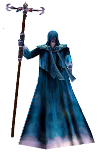
Loot
- Amulet of the Rain
- Crystallized Rain
- Double Edged Stormblade
- Karana’s Tear
- Longbow of the Stormcaller
- Orb of Thunderous Spirits
- Stormriders Gauntlets
- Spectral Parchment
- Glyphed Rune Word
Fight Info
In order to zone into Agnarr’s Lair at least one person in your raid will need to have completed the Symbol of Torden quest. This key unlocks the genital statue so that everyone can click up. If you try clicking it before someone with the key does the gargoyles nearby will aggro. The Agnarr statue portal (shown in picture) is located on the other side of a teleport pad of any of the first 4 wings.
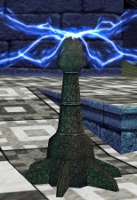
The Agnarr the Storm Lord event has 3 Phases. All take place on different in different rooms. Askr the Lost will port your raid between rooms once you have completed a room.
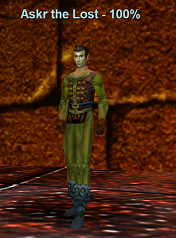
Phase 1
In the first room you’ll see Evynd Firestorm as soon as you zone in. You’ll also see 3 red portals around the room. These portals are attackable and need to be killed ASAP. They summon elemental fire mobs. Kill all the portals and the elementals. You can off-tank or kite Evynd Firestorm in the meantime. Once dead kill Evynd Firestorm.
Evynd Firestorm abilities:
- Hits 900+
- Rampages
- Slowable
- Casts Flamewall (Targeted AE, -800 HP DoT/-750AC, Fire Based)
- Casts Storm Flame (Targeted AE, 400 DD, Unresistable, Small Radius)
- Estimated 500K HP
- Immune to Fire
Askr the Lost will spawn. Speak to him to port up to the next room. Say “transport” to zone up.
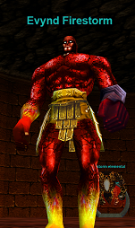
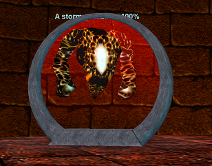
Phase 2
Phase 2 is essentially the same strategy as Phase 1. You’ll see Emmerik Skyfury when you zone in with 3 portals around the room that summon. Kite and/or offtank Emmerik Skyfury while killing off the portals and adds. Kill Emmerik Skyfury afterwards. He has a couple nasty AE’s.
Emmerik Skyfury abilities:
- Hits 1,000+
- Rampages
- Slowable
- Casts Meteor Storm (Targeted AE, – 500 Mana/1500 DD/1 sec stun, -300 Fire Based)
- Casts Storm Comet (Targeted AE, 3000DD/90% slow/10% snare, Unresistable, 36 curse counter)
- Casts Stone Thunder (Single Target, Root/Silence, – 300 Magic Based)
- Estimated 600K HP
- High Cold Resist
Askr the Lost will spawn. Speak to him to port up to the next room. Say “storm” to zone up.
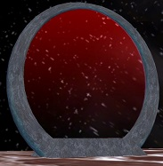
Phase 3
The 3rd and final phase is Agnarr the Storm Lord. He will aggro as soon as you zone in so have tanks zone in first and healers right after. This room has 5 portals. All are killable except the middle one. Kite and/or offtank Agnarr the Storm Lord until the other 4 portals and adds are dead.
Agnarr the Storm Lord spawns a named add every so often (roughly 100%, 75%, 50%, 25%) during the fight. Kill the named adds as they spawn.
- Jolur Sandstorm (100%) – Estimated 250K HP, Hits 800+, Slowable, Disease Resist
- Ekil Thundercall (75%) – Estimated 250K HP, Hits 800+, Slowable, Fire Immune
- Oljin Stormtide (50%) – Estimated 250K HP, Hits 800+, Slowable, Cold Immune
- Hibdin Cyclone (25%) – Estimated 250K HP, Hits 800+, Cannot be slowed, Disease Resist
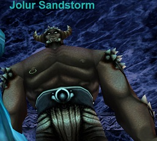
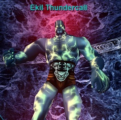
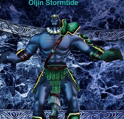
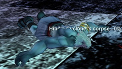
Agnarr the Storm Lord:
- Hits 477–1406 (PQDI; eqprogression estimated 1600+)
- Slowable
- 1,050,000 HP (PQDI; eqprogression estimated 1.1 million)
- Casts Manastorm (PBAE, 600 DD/ -200 Mana, Magic Based)
- Casts Rage of the Rainkeeper (PBAE, 7.5 spin stun/800 DD/Small DoT, Unresistable)
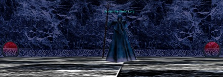
Flagging Phase
Once Agnarr the Storm Lord is dead run up the steps and you’ll see Karana.
- Say “follow the path of the fallen” to receive your characater flag!
- Say “send you on your way” to zone out.
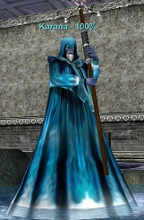
| Level | 75 |
|---|---|
| HP | 1,050,000 |
| Hits | 477 - 1406 |
| Resistances | MR 140 / CR 90 / FR 90 / DR 75 / PR 75 |
| Special Abilities | Summon, Enrage, Dual Wield, Do Not Equip, Magical Attack, Uncharmable, Unstunable, Unfearable, Immune to fleeing, Immune to melee except magical, Immune to lull effects |
| Can Cast | Manastorm, Rage of the Rainkeeper |
| Procs | Chain Lightning |
Cross-referenced from pqdi.cc (Project Quarm Database Interface)
Lord Mithaniel Marr
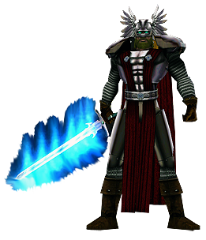
Loot
- Blade of the Tempest
- Bow of Contortion
- Cloak of the Wrulons
- Dart of Immobility
- Gemstone Choker
- Signet of the Advisor
- Valiant Belt of Fallen Heroes
- Spectral Parchment
- Glyphed Rune Word
Fight Info
Lord Mithaniel Marr has 3 mini bosses that must be killed before he will fully “spawn”. If he’s viewable and all 3 mini-bosses are up, then he is up, however you still cannot target him until the 3 mini bosses are dead.
All of the bosses are fairly easy but you may want to pull them 1 at a time if your raid is not very experienced. Pulling both the trash and the mini bosses outside of the boss room and into the hallway is recommended. They should also killed in a particular order:
- Halon of Marr – Hits 1500+ – 190K HP – Rampages – Slowable
- Edium, Guardian of Marr – Hits 2000+ – 190K HP – Rampages – Slowable
- Ralthazor, Champion of Marr – Hits 1400 (35 Heroic Stamina Warrior) – 270K HP – Rampages – Slowable
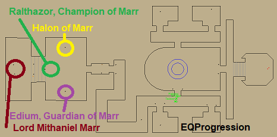
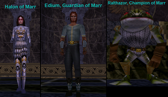
Pull all trash out of the room before spawning Lord Mithaniel Marr. Once the mini bosses are dead you can finally target, and kill, Lord Mithaniel Marr.
Have a Paladin, or someone other than the main tank, pull him to take the single target rampage. He hits hard and fast and can proc a big DD + stun on the main tank. Melee should be max melee to help avoid the AE Rampage. DPS must be careful not to over-aggro the main tank. A CH (Complete Heal) rotation is recommended to keep the main tank up. It is recommended to tank him in a corner and have casters stay back a bit along one of the walls.
Lord Mithaniel Marr:
- Hits 435–2096 (PQDI; eqprogression estimated 2,300+ on 35 H-Stamina Warrior)
- 1,200,000 HP (PQDI; eqprogression estimated approx. 1.3 million)
- AE Rampages
- Single Target Rampages
- Slowable with Disease
- Flurries
- Casts Silence of Marr (Single Target, Root, – 200 Magic Based)
- Procs Strike of Marr (Single Target, 3500 DD/3 sec stun, -150 Magic Based)
Once dead, a planar projection will spawn in the middle of his room for a flag.
| Level | 77 |
|---|---|
| HP | 1,200,000 |
| Hits | 435 - 2096 |
| Resistances | MR 350 / CR 215 / FR 215 / DR 205 / PR 205 |
| Special Abilities | Summon, Rampage, Dual Wield, Do Not Equip, Magical Attack, Unmezzable, Uncharmable, Unstunable, Unsnarable, Unfearable, Immune to fleeing, Immune to melee except magical, Will not Aggro, Immune to lull effects, No Harm from Players, Always Calls for Help, Use Warrior Skills |
| Can Cast | Flame of Light, Touch of Nife, Silence of Marr, Blinding Essence of Purity |
| Procs | Strike of Marr |
Cross-referenced from pqdi.cc (Project Quarm Database Interface)
Tallon Zek
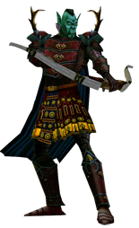
Loot
- Battle Fists
- Tallon’s War Charm
- Veteran’s Battle Charm
- Visor of Endless Sight
- Warmaster’s Recurved Longbow
- Spectral Parchment
- Glyphed Rune Word
Fight Info
Before engaging, make sure everyone has some form of Levitation as Tallon Zek has a Gravity Flux. Also be sure to pull and kill the trash mobs out of the the corners of his room prior to having the raid enter.
Tallon Zek is pretty straight forward, but has a few mechanics to note:
- He will chain cast Barb of Tallon. This Spell has 4 different types of effects:
- Targeted AE, -300 HP DoT/-150 AC/60% Deaggro on Main Tank, -100 Disease Based
- Targeted AE, 1500-3500 DD, -100 Cold Based, 40% Slow, 40% Snare
- Single Target, 3500 DD, -100 Fire Based, 5 second recast
- Single Target, 1750 DD, -100 Poison Based
- Shadowsteps around the room, facing different directions.
- Gravity Fluxes frequently, especially on the tank.
- Casts a PBAE dispel. Bury your levitate buff as much as you can. If it gets dispelled get another one if needed.
- Casts Tallon’s Balance: PBAE -300 Resist Debuff
- Melees for about 1,000 at most. His melee is weak and he has a low amount of HP.
The general strategy is that this is a ranged only fight due to his constant shadowsteping and frontal cone with a damage/slow/snare effect, but you can certainly have melee go in to do some extra damage. You can still try to have some tanks on him, but aggro will bounce around. The main reason a raid would wipe is if everyone got AE’d down by his cone and/or didn’t have levitate. Overall the fight is trivial.
Keep the tanks up, Load AE heals, and have the raid spread out so not everyone gets hit at once by his AE.
Hail A Planar Projection for your flag! Click on the door in his room to port back to the zone in area.
| Level | 71 |
|---|---|
| HP | 1,400,000 |
| Hits | 1007 - 3040 |
| Resistances | MR 200 / CR 175 / FR 200 / DR 170 / PR 170 |
| Special Abilities | Summon, Enrage, Rampage, Dual Wield, Do Not Equip, Unslowable, Unmezzable, Uncharmable, Unstunable, Unsnarable, Immune to fleeing, Immune to melee except magical, Immune to lull effects |
| Can Cast | Barb of Tallon, Barb of Tallon, Barb of Tallon, Barb of Tallon, Tallon’s Balance, Strategic Blow, Planeshift |
Cross-referenced from pqdi.cc (Project Quarm Database Interface)
Vallon Zek
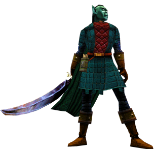
Loot
- Furious Hammer of Zek
- Girdle of the Tactician
- Obsidian Scimitar of War
- Pendant of the Triumphant Victor
- Resplendent War Maul
- Spectral Parchment
- Glyphed Rune Word
Fight Info
Before engaging, make sure to clear the trash mobs from the corners of his room.
Vallon Zek splits into 5 versions of himself once he hits a certain HP % (seems to be around 60%). The key to this fight is that only 1 of these 5 splits is the “Real” Vallon Zek. Each time you kill the “real” one, another wave of 5 Vallon’s will spawn and you will have to find and kill the “real” one again. Repeat this process 4 of 5 times until you win. A planar projection spawns when the event is over.
Vallon Zek hits for roughly 1,000 with MoTM.
How do you find the “Real” Vallon Zek?
Just setup a hotkey: /target Vallon_Zek00. The “Real” Vallon Zek always spawns first, so has 00 after his name. It also casts and runs faster than the rest of his phony friends.
There are two ways to handle the “fake” Vallons:
- You can kite/offtank them and chain kill the real ones. This generates a lot of adds that need to be finished off at the end of the fight. This is not recommended for less experienced guilds.
- You can kill the fake Vallon’s first and once the wave is clear then kill the real one to spawn the next set. Rinse and repeat. This method is slightly slower but is way more controlled and is less risk of a wipe.
Hail the A Planar Projection for your flag! Click on the door behind where Vallon Zek stands to port back to the zone in area.
| Level | 71 |
|---|---|
| HP | 34,867 |
| Hits | 121 - 881 |
| Resistances | MR 50 / CR 50 / FR 50 / DR 30 / PR 30 |
| Special Abilities | None |
Cross-referenced from pqdi.cc (Project Quarm Database Interface)
Rallos Zek the Warlord
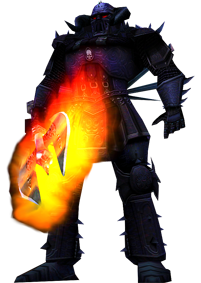
Loot
- Black Collar of Boundless Might
- Blade of War
- Boots of the Warmaster
- Grimfaced Visor
- Red Eyed Mask of Rage
- War Charm of Crossed Blades
- Spectral Parchment
Fight Info
Inside Plane of Tactics, you will find Rallos Zek. He has his own scripted event that takes place above and in the arena.
Phase One: Starting the Event
From the zone in, go straight, then go around the edge of the arena. Do not drop down. Along the back wall there will be steps going up to the event hallway. At the top of the hallway you can go either right or left. At the end of each hall, you will find two NPC’s Decorin Berik and Decorin Grunhork.
Killing Decorin Berik and Decorin Grunhork starts the event. You must kill them within 6 minutes of each other. You will want to clear all of the trash in the hallways on both sides leading up to both Decorin. Once everything is clear, pull them to the raid and kill them. Be careful not to kill them on top of Vallon or Tallon’s spawn points (See part 2).
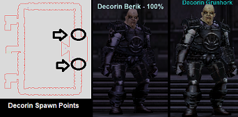
Phase Two: Tallon and Vallon
After the Decorin die, Tallon Zek and Vallon Zek spawn in the north and south halls. After a few minutes, they will roam back through the doorways behind where the Decorin were originally standing. This is known as the Fake Rallos Zek room. You will want to pull one before it starts roaming, then have a puller split the other one out of the Fake Rallos Zek room.
Tallon and Vallon must be killed within about 20 minutes of each other. They have similar mechanics to their stand-alone versions.
Tallon Zek: Casts an AE. Melees fairly hard. He will be the harder of the two. Casters and healers should hide in crevices of the wall to avoid as much of the AE as possible. Get Levitate to avoid his deflux. Make sure DPS does not over-aggro him. Heavy heals on the tank and have group heals ready.
Vallon Zek: Splits into two mobs and his add needs to be delt with simultaneously. Kill the real Vallon Zek first while off-tanking the add. Finish off the add then res the dead and get ready to deal with big boy. I believe there was only one add, but don’t remember exactly.
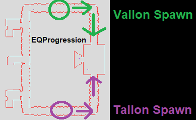
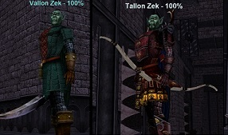
Phase Three: Fake Rallos Zek
Clear out all remaining trash in Fake Rallos Zek’s room. Tank him in a corner, and put the raid in an adjacent corner. He AE ramps and also spawns adds in the hallway. He will de-spawn at roughly 50% and his real version will spawn in the Arena below.
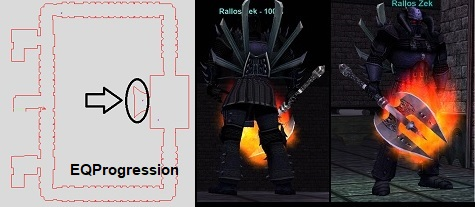
Phase Four: Rallos Zek the Warlord
Rallos Zek the Warlord will spawn down in the large Arena after killing “Fake” Rallos Zek. He hits somewhat hard and is a DPS check fight. Levitate down and put the raid along a wall near a corner. The tank should corner tank him. Adds will spawn in the room every 54 seconds. A group will need to kite them around the room while the rest of the raid burns down Rallos Zek the Warlord as fast as possible. He AE’s ramps so have melee dps be at max range. After he dies, kill the adds. Hail A Planar Projection in the middle of the Arena for your flag!
- 1,050,000 HP (PQDI; eqprogression estimated MoTM 1.1-1.2 million)
- Hits 297–1072 (PQDI; eqprogression estimated 1300+)
- AE Rampages
- Likely slowable (not confirmed)
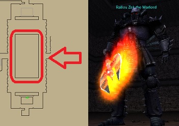
| Level | 75 |
|---|---|
| HP | 1,050,000 |
| Hits | 297 - 1072 |
| Resistances | MR 140 / CR 90 / FR 90 / DR 85 / PR 85 |
| Special Abilities | Summon, Enrage, Area Rampage, Dual Wield, Do Not Equip, Magical Attack, Unmezzable, Uncharmable, Unstunable, Unsnarable, Unfearable, Immune to fleeing, Immune to melee except magical, Immune to lull effects, Corpse Camper |
| Can Cast | Rage of Zek |
| Procs | Sedition |
Cross-referenced from pqdi.cc (Project Quarm Database Interface)
Watch
Sources: eqprogression.com guide pages — Agnarr the Storm Lord (Bastion of Thunder), Lord Mithaniel Marr (Temple of Marr), Tallon Zek, Vallon Zek, and Rallos Zek the Warlord (Plane of Tactics); raspersrealm.com (Plane of Time only); pqdi.cc for boss statistics. Videos embedded from YouTube.